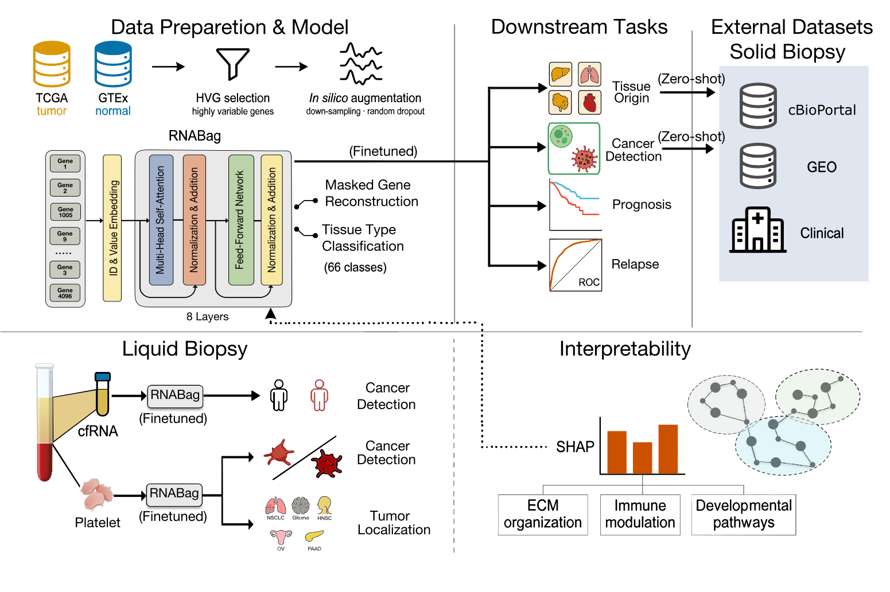

RNABag · Transcriptome foundation model
一个模型，连接多种转录组任务
RNABag 以 TCGA 与 GTEx 表达谱为基础，通过高变基因选择、in silico augmentation 与共享 RNA 编码器，学习可在 solid biopsy 与 liquid biopsy 之间迁移的通用转录组表征。
从输入模态到 checkpoint 输出，沿着四个章节理解一次完整的研究分析。
4096 个高变基因与 Gene ID 编码成可迁移的 RNA representation。
组织、血浆与血小板输入由不同 prediction head 连接到研究问题。
从样本级预测回到基因与通路贡献。

Pinned scrollytelling stage
沿着四章完成一次分析
左侧章节解释研究意图，右侧舞台保持当前操作上下文；滚动到下一章时，stage 会同步切换。
01 · Input
先建立正确的样本上下文
modality 决定 checkpoint 家族与可用预测范围。先选择组织、血浆或血小板 RNA，让后面的任务选择有明确边界。
Open Input stage ↘02 · Task
把研究问题命名清楚
不同 prediction head 拥有不同 label space、输出策略与 biological objective。选择任务就是确定模型要回答的问题。
Open Task stage ↘03 · Validate
让表达矩阵变得可读
UTF-8 TSV 经过 GeneID mapping、ordered 4096 HVG selection 与 log1p transformation，才会进入本地 checkpoint。
Open Validate stage ↘04 · Result
阅读 checkpoint 的研究输出
结果舞台展示样本级概率与任务特异的预测摘要。所有输出仅限研究展示，不构成临床诊断。
Open Result stage ↘01 · Choose input
输入模态决定可用 checkpoint 与预测范围。
Sample modality